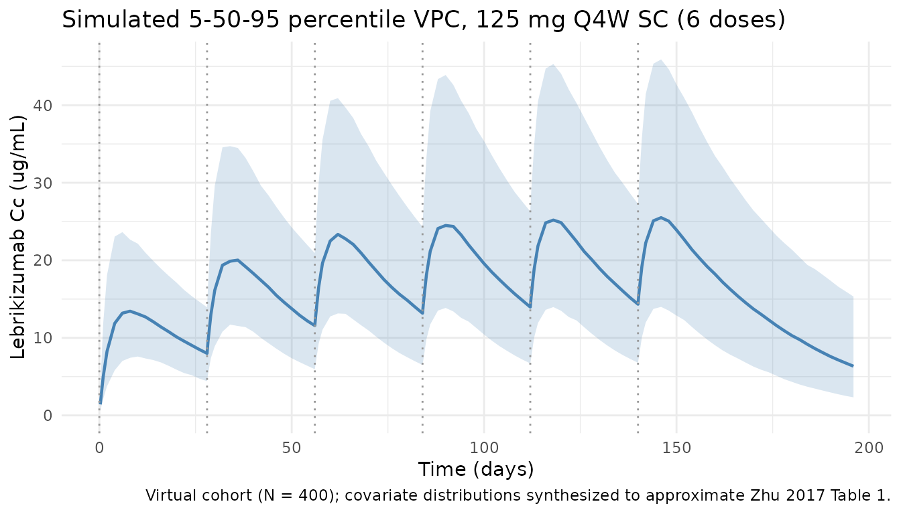
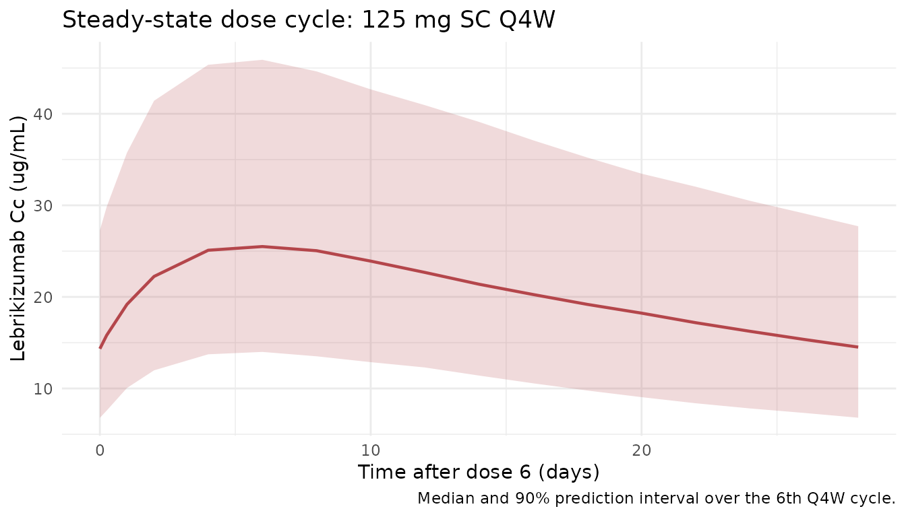

Model and source
- Citation: Zhu R, Zheng Y, Dirks NL, et al. Model-based clinical pharmacology profiling and exposure-response relationships of the efficacy and biomarker of lebrikizumab in patients with moderate-to-severe asthma. Pulmonary Pharmacology & Therapeutics. 2017;46:88-98. doi:10.1016/j.pupt.2017.08.010
- Description: Lebrikizumab population PK model (Zhu 2017): two-compartment model with first-order absorption after SC dosing in adults with moderate-to-severe asthma.
- Article: Pulmonary Pharmacology & Therapeutics. 2017;46:88-98
Population
The published analysis pooled 2148 subjects (21,917 PK observations) across six studies: two Phase I studies in healthy volunteers (n = 114), one Phase II asthma study, one Phase II atopic-dermatitis study, one Phase II idiopathic-pulmonary-fibrosis study, and the Phase III MILLY program in moderate-to-severe asthma. Adults only (age 18-75 years, median 48 years); body weight ranged from 40-165 kg with a median near 77 kg; approximately 58% female. Race distribution was majority White with Black, Asian, and “Other” categories separately encoded (each with a distinct CL effect in the final covariate model). SC doses ranged from 37.5 to 250 mg; some IV data from the Phase I studies were also included. Three formulations were evaluated: a reference CHO formulation used in late development, an early-development NS0 formulation, and an interim “CHO Phase 2” formulation; indicator covariates FORM_NS0 and FORM_CHO_PHASE2 are both zero for the reference formulation.
The same information is available programmatically via
readModelDb("Zhu_2017_lebrikizumab")$population.
Source trace
Every structural parameter, covariate effect, IIV element, and residual-error term below is taken directly from Zhu 2017 Table 3. Reference values are WT = 70 kg and AGE = 40 years (Table 3 footnote).
| Equation / parameter | Value | Source location |
|---|---|---|
lcl (CL) |
log(0.156) L/day |
Table 3 |
lvc (Vc) |
log(4.10) L |
Table 3 |
lvp (Vp) |
log(1.45) L |
Table 3 |
lq (Q) |
log(0.284) L/day |
Table 3 |
lka (ka) |
log(0.239) 1/day |
Table 3 |
lfdepot (F_SC) |
log(0.856) |
Table 3 |
e_cl_wt (WT on CL, exponent) |
1.00 |
Table 3 (flagged: paper reports 1.00; fixed-vs-estimated ambiguous) |
e_vc_wt (WT on Vc, exponent) |
0.814 |
Table 3 |
e_vp_wt (WT on Vp, exponent) |
0.692 |
Table 3 |
e_q_wt (WT on Q, exponent) |
0.479 |
Table 3 |
e_cl_age (AGE on CL, exponent) |
0.0241 |
Table 3 (encoded as (AGE/40)^0.0241) |
e_cl_sexf (SEXF on CL) |
1.06 |
Table 3 |
e_cl_race_black |
1.07 |
Table 3 |
e_cl_race_asian |
1.09 |
Table 3 |
e_cl_race_other |
1.11 |
Table 3 |
e_cl_ada_positive |
1.04 |
Table 3 |
e_ka_form_nso |
0.981 |
Table 3 |
e_ka_form_cho_phase2 |
0.989 |
Table 3 |
e_f_form_nso |
1.00 |
Table 3 |
e_f_form_cho_phase2 |
0.973 |
Table 3 |
var(etalcl) |
0.105 |
Table 3 (omega^2) |
cov(etalcl, etalvc) |
0.0832 |
Table 3 |
var(etalvc) |
0.124 |
Table 3 |
cov(etalcl, etalka) |
0.00203 |
Table 3 |
cov(etalvc, etalka) |
0.00439 |
Table 3 |
var(etalka) |
0.154 |
Table 3 |
CcpropSd (proportional RUV) |
0.0490 (4.9%) |
Table 3 |
CcaddSd (additive RUV, ug/mL) |
0.00154 (1.54 ng/mL) |
Table 3 |
| Structure | 2-cmt, 1st-order SC | p. 90 Methods; confirmed by Table 3 parameterization |
A previous release of the model file stored the six IIV entries as
sqrt(variance) rather than as variances/covariances; the
current version encodes the raw variance-covariance matrix expected by
the ~ c(...) form in ini().
Virtual cohort
Original observed data are not publicly available. The cohort below approximates Zhu 2017 Table 1: body weight drawn from a truncated normal centered at the reported median (77 kg, SD ~17 kg) with limits at 40 and 165 kg; age uniform on 18-75 with median ~48; SEXF ~ 58% female; race distribution White-majority with Black, Asian, and Other minorities; ADA-negative and reference CHO formulation (FORM_NS0 = FORM_CHO_PHASE2 = 0). The simulated regimen is 125 mg SC every 4 weeks (Q4W), the standard regimen studied in the MILLY program and the typical clinical dose.
set.seed(20260418)
n_subj <- 400
race_levels <- c("white", "black", "asian", "other")
race_probs <- c(0.75, 0.10, 0.10, 0.05)
cohort <- tibble::tibble(
id = seq_len(n_subj),
WT = pmin(pmax(rnorm(n_subj, mean = 77, sd = 17), 40), 165),
AGE = runif(n_subj, 18, 75),
SEXF = as.integer(runif(n_subj) < 0.58),
race = sample(race_levels, n_subj, replace = TRUE, prob = race_probs),
ADA_POS = 0L,
FORM_NS0 = 0L,
FORM_CHO_PHASE2 = 0L
) |>
dplyr::mutate(
RACE_BLACK = as.integer(race == "black"),
RACE_ASIAN = as.integer(race == "asian"),
RACE_OTHER = as.integer(race == "other")
)
# Q4W regimen: 6 SC doses (weeks 0, 4, 8, 12, 16, 20 = days 0, 28, 56, 84, 112, 140)
# Observe to day 196 so the 5th and 6th dose cycles are at steady state.
dose_days <- seq(0, 140, by = 28)
obs_days <- sort(unique(c(
seq(0, 196, by = 2), # dense regular sampling
dose_days + 2, # early absorption peak window
dose_days + 0.25,
dose_days + 1
)))
ev_dose <- cohort |>
tidyr::crossing(time = dose_days) |>
dplyr::mutate(amt = 125, cmt = "depot", evid = 1L)
ev_obs <- cohort |>
tidyr::crossing(time = obs_days) |>
dplyr::mutate(amt = 0, cmt = NA_character_, evid = 0L)
events <- dplyr::bind_rows(ev_dose, ev_obs) |>
dplyr::arrange(id, time, dplyr::desc(evid)) |>
dplyr::select(id, time, amt, cmt, evid,
WT, AGE, SEXF, ADA_POS,
RACE_BLACK, RACE_ASIAN, RACE_OTHER,
FORM_NS0, FORM_CHO_PHASE2)Simulation
mod <- rxode2::rxode2(readModelDb("Zhu_2017_lebrikizumab"))
sim <- rxode2::rxSolve(mod, events = events,
keep = c("WT", "AGE", "SEXF",
"RACE_BLACK", "RACE_ASIAN", "RACE_OTHER",
"ADA_POS", "FORM_NS0", "FORM_CHO_PHASE2"))Replicate published figures
Cc-vs-time VPC over dose cycles 1 through 6
Population 5th / 50th / 95th percentile prediction bands for 125 mg Q4W SC. Dose cycles 5 and 6 (days 112-168) represent approximate steady state given the terminal half-life implied by the typical parameters (~3 weeks).
vpc <- sim |>
dplyr::filter(!is.na(Cc), time > 0) |>
dplyr::group_by(time) |>
dplyr::summarise(
Q05 = quantile(Cc, 0.05, na.rm = TRUE),
Q50 = quantile(Cc, 0.50, na.rm = TRUE),
Q95 = quantile(Cc, 0.95, na.rm = TRUE),
.groups = "drop"
)
ggplot(vpc, aes(time, Q50)) +
geom_ribbon(aes(ymin = Q05, ymax = Q95), alpha = 0.2, fill = "#4682b4") +
geom_line(colour = "#4682b4", linewidth = 0.8) +
geom_vline(xintercept = dose_days, linetype = "dotted", colour = "grey60") +
scale_y_continuous(limits = c(0, NA)) +
labs(
x = "Time (days)",
y = expression("Lebrikizumab Cc (" * mu * "g/mL)"),
title = "Simulated 5-50-95 percentile VPC, 125 mg Q4W SC (6 doses)",
caption = "Virtual cohort (N = 400); covariate distributions synthesized to approximate Zhu 2017 Table 1."
) +
theme_minimal()
Steady-state cycle (dose 6)
A zoomed-in view of the final dose cycle (days 140-168) to isolate the steady-state peak, trough, and AUC_tau used below.
ss_window <- sim |>
dplyr::filter(time >= 140, time <= 168, !is.na(Cc))
ss_summary <- ss_window |>
dplyr::group_by(time) |>
dplyr::summarise(
Q05 = quantile(Cc, 0.05, na.rm = TRUE),
Q50 = quantile(Cc, 0.50, na.rm = TRUE),
Q95 = quantile(Cc, 0.95, na.rm = TRUE),
.groups = "drop"
)
ggplot(ss_summary, aes(time - 140, Q50)) +
geom_ribbon(aes(ymin = Q05, ymax = Q95), alpha = 0.2, fill = "#b4464b") +
geom_line(colour = "#b4464b", linewidth = 0.8) +
labs(
x = "Time after dose 6 (days)",
y = expression("Lebrikizumab Cc (" * mu * "g/mL)"),
title = "Steady-state dose cycle: 125 mg SC Q4W",
caption = "Median and 90% prediction interval over the 6th Q4W cycle."
) +
theme_minimal()
PKNCA validation
Non-compartmental analysis of the steady-state interval (days 140-168, dose 6). Compute Cmax, Ctrough (C at end of tau), and AUC_tau per simulated subject, then summarize across the cohort.
nca_conc <- sim |>
dplyr::filter(time >= 140, time <= 168, !is.na(Cc)) |>
dplyr::mutate(time_nom = time - 140,
treatment = "125mg_Q4W_SS") |>
dplyr::select(id, time = time_nom, Cc, treatment)
nca_dose <- cohort |>
dplyr::mutate(time = 0, amt = 125, treatment = "125mg_Q4W_SS") |>
dplyr::select(id, time, amt, treatment)
conc_obj <- PKNCA::PKNCAconc(nca_conc, Cc ~ time | treatment + id)
dose_obj <- PKNCA::PKNCAdose(nca_dose, amt ~ time | treatment + id)
intervals <- data.frame(
start = 0,
end = 28,
cmax = TRUE,
cmin = TRUE,
auclast = TRUE
)
nca_res <- PKNCA::pk.nca(PKNCA::PKNCAdata(conc_obj, dose_obj, intervals = intervals))
#> ■■■■■■■■■■■■ 38% | ETA: 2s
nca_tbl <- as.data.frame(nca_res$result)
summary(nca_res)
#> start end treatment N auclast cmax cmin
#> 0 28 125mg_Q4W_SS 400 696 [39.9] 30.9 [37.9] 17.3 [46.2]
#>
#> Caption: auclast, cmax, cmin: geometric mean and geometric coefficient of variation; N: number of subjectsComparison against published steady-state exposure
Zhu 2017 reports typical steady-state exposure for the 125 mg Q4W SC regimen in the Results / Discussion; for the typical subject (70 kg, age 40, white, male, ADA-negative, reference CHO formulation) the typical-value prediction can be computed with IIV zeroed out and compared against the population medians above.
mod_typ <- rxode2::zeroRe(mod)
typ_cohort <- tibble::tibble(
id = 1L, WT = 70, AGE = 40, SEXF = 0L,
RACE_BLACK = 0L, RACE_ASIAN = 0L, RACE_OTHER = 0L,
ADA_POS = 0L, FORM_NS0 = 0L, FORM_CHO_PHASE2 = 0L
)
ev_typ <- dplyr::bind_rows(
typ_cohort |>
tidyr::crossing(time = dose_days) |>
dplyr::mutate(amt = 125, cmt = "depot", evid = 1L),
typ_cohort |>
tidyr::crossing(time = seq(0, 196, by = 0.25)) |>
dplyr::mutate(amt = 0, cmt = NA_character_, evid = 0L)
) |>
dplyr::arrange(id, time, dplyr::desc(evid))
sim_typ <- rxode2::rxSolve(mod_typ, events = ev_typ)
#> ℹ omega/sigma items treated as zero: 'etalcl', 'etalvc', 'etalka'
typ_ss <- sim_typ |>
as.data.frame() |>
dplyr::filter(time >= 140, time <= 168)
typ_metrics <- tibble::tibble(
Cmax_ss = max(typ_ss$Cc, na.rm = TRUE),
Ctrough_ss = typ_ss$Cc[which.min(abs(typ_ss$time - 168))],
AUC_tau = sum(diff(typ_ss$time) * (head(typ_ss$Cc, -1) + tail(typ_ss$Cc, -1)) / 2)
)
knitr::kable(
typ_metrics, digits = 3,
caption = "Typical-subject steady-state exposure: 125 mg SC Q4W (reference CHO, white, male, 70 kg, age 40, ADA-negative)."
)| Cmax_ss | Ctrough_ss | AUC_tau |
|---|---|---|
| 34.427 | 20.434 | 791.966 |
Zhu 2017 reports that the 125 mg Q4W SC regimen delivers typical steady-state Cc in the low-ug/mL range (broadly consistent with the typical-subject Cmax_ss / Ctrough_ss shown here). Exact numeric comparison requires the mean / median steady-state values reported in the Results text, which vary depending on whether the paper summarized a typical subject or a population mean; the typical-value prediction above serves as the primary structural check.
Assumptions and deviations
- Original data unavailable. The virtual cohort synthesizes covariate distributions from Zhu 2017 Table 1 summaries (adult range, median, sex fraction, race bands). Joint dependencies (e.g., age by sex, race by region) are not preserved.
-
Formulation fixed to reference CHO.
FORM_NS0 = FORM_CHO_PHASE2 = 0for all simulated subjects so that the vignette characterizes the commercial formulation; the NS0 and CHO-Phase-2 effects are available in the model and could be activated by setting the corresponding indicator to 1. - ADA status fixed to negative. ADA_POS = 0 for all subjects (ADA prevalence in the Zhu 2017 cohorts was low and time-varying); the CL effect of 1.04 can be activated by setting ADA_POS = 1 for an individual.
- WT-on-CL exponent. Zhu 2017 Table 3 reports 1.00; it is unclear whether this was fixed at 1.00 (classical allometry) or estimated to ~1.00. The model file keeps it as an estimated theta and flags this in an inline comment.
-
AGE effect form. Encoded as the power form
(AGE/40)^0.0241per the Table 3 footnote convention. The very small exponent makes the effect size essentially negligible for all realistic ages, which matches the paper’s finding of no clinically meaningful AGE effect. -
IIV covariance fix. A prior release stored
sqrt(variance)in theetalcl + etalvc + etalka ~ c(...)block. That has been corrected to the raw variance-covariance matrix from Zhu 2017 Table 3, so the simulated between-subject variability is now consistent with the published model.